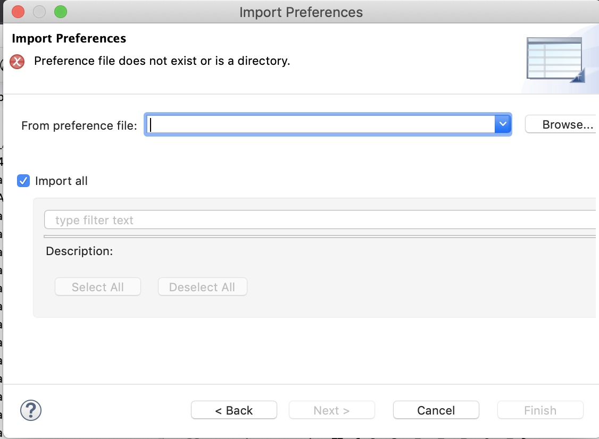
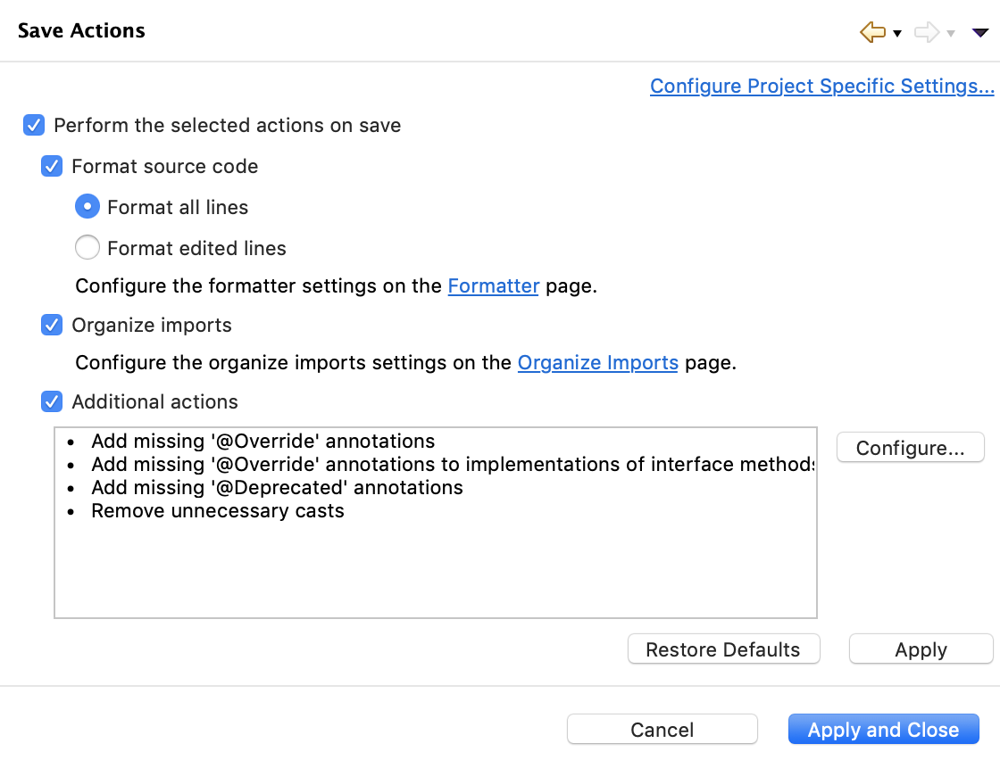

2. Importing preferences for automatic formatting
Eclipse has the capability to do so some automatic formatting whenever a file that is being edited is saved. This automatic formatting can make programs more readable and understandable. For example, Eclipse can automatically put spaces around operators like + and - and insert blank lines between methods —things that you should be doing yourself. Having Eclipse do these tasks saves you time and provides consistency.
Below, we give instructions for downloading and importing a file of such preferences. A list of most of the tasks performed is given at the end of this document.
1. Download this file CS2110EclipseCodeStylePref.epf.
2. In Eclipse, use menu item
File -> import
In the window that opens, choose General -> Preferences and click button Next.
3. A new window will open, as shown to the right. Use button Browse to navigate to where you stored file CS2110EclipseCodeStylePref.epf and choose it. After you do this, button Finish will become enabled.
Make sure checkbox Import all is checked and click button Finish.
4. In the window that pops up, click Restart, because otherwise your workbench might be in an inconsistent state.
5. Once Eclipse opens again, use menu item Eclipse -> Preferences.
6. In the window that opens, choose Java -> Editor -> Save Actions. The window pane will now look as shown to the right. Make sure that these boxes are checked:
- Perform the selected actions on save
- Format source code
- Format all lines
- Organize imports
- Additional actions
Click button Apply and Close.
Actions performed when a file is saved
- A blank line is inserted between adjacent methods.
- A space is inserted before and after each operator, like +, -, &, ||.
- Each opening brace { is placed at the end of a line (with a space before it), and never on a line by itself. Why? A scarce resource is the number of lines one can see at any point. Placing a brace on a separate line wastes this resource.
- Unnecessary parentheses are removed in expressions, thus removing useless clutter.
- The assignment operator = will have no space before it and one space after it. This makes it look non-symmetric, which is good because assignment is not a symmetric operation. See this pdf file for the history of == versus == and why using = for assignment was a sad choice.
- Unnecessary uses of "this." are removed.
- Unnecessary casts are removed.